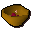

Tomato
| Config name | tomato |
| Item id | 1982 |
| Value | 4 gp |
| Weight | 80g |
| Members | No |
| Tradeable | Yes |
| Stackable | No |
| Options | Eat |
| Defined in | scripts/skill_cooking/configs/cooking_inv/configs/pizza/pizza.obj |
Tomato
This would make good ketchup.
Show 3 ground spawns on the world map → Open in knowledge graph →
Used to make
| Skill | Level | XP | Ingredients | Tool | How | Where | Makes |
|---|---|---|---|---|---|---|---|
| Cooking | 1 | use on item | members; the same bowl with the other ingredient gives bowl_ugthankionion | ||||
| Cooking | 1 |  Ugthanki & onion, | use on item | members | |||
| Cooking | 1 | use on item | |||||
| Cooking | 1 | use on object | range | ||||
| Cooking | 1 | use on object | range | ||||
| Cooking | 35 | use on item |
Dropped by
| NPC | Level | Quantity | Rarity | Via | Notes |
|---|---|---|---|---|---|
| 48 | 1 | 1/128 (0.78%) |
Sold at
| Shop | Shopkeeper | Stock |
|---|---|---|
| Grand Tree Groceries | 5 | |
| Food Store | 3 |
Ground spawns
| Area | Coordinates | Level | Count | Map |
|---|---|---|---|---|
| Bandit Camp | 3039, 3706 | 0 | 1 | view |
| Gu'Tanoth | 2584, 2966 | 0 | 1 | view |
| Market | 3087, 3261 | 0 | 1 | view |
Quests
Referenced in scripts
scripts/_test/scripts/cheats/cheat_bank.rs2scripts/_test/scripts/debug/debug_gnomecooking.rs2scripts/areas/area_alkharid/scripts/thkebabinstructs.rs2scripts/areas/area_ardougne_west/scripts/recruiter.rs2scripts/areas/area_gnome/scripts/gnome_restaurant.rs2scripts/drop tables/scripts/chaos_dwarf.rs2scripts/general_use/scripts/water_sources.rs2scripts/quests/quest_chompybird/scripts/fycie.rs2scripts/quests/quest_chompybird/scripts/raw_chompy.rs2scripts/skill_cooking/scripts/cooking_inv/scripts/pizza/pizza.rs2scripts/skill_cooking/scripts/cooking_inv/scripts/ugthanki_kebab/ugthanki_kebab.rs2scripts/skill_cooking/scripts/gnome_cooking/gnome_battas.rs2scripts/skill_cooking/scripts/gnome_cooking/gnome_bowls.rs2scripts/skill_cooking/scripts/gnome_cooking/gnome_crunchies.rs2